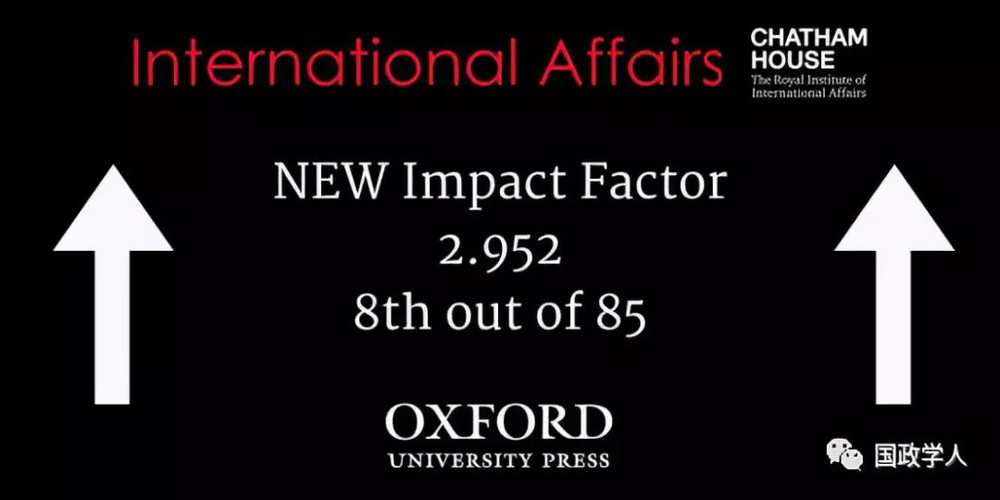
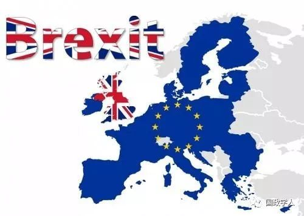

收录于合集

简 介
【作者】 ** 理查德·惠特曼（** Richard G. Whitman），肯特大学政治与国际关系教授、全球欧洲中心主任、欧洲项目的副研究员、社会科学院院士、英国国际研究协会(BISA)执行成员，其目前的研究兴趣包括欧盟的对外关系、欧盟的外交和安全防务政策、以及欧盟的治理和未来重点。
【编译】 陈成龙
【审校】 汪琪茜、许文婷、高嘉琳
【来源】 ****Whitman, Richard G. “The UK’s European diplomatic strategy for Brexit and beyond.” International Affairs 95.2 (2019): 383-404.
【期刊】 International Affairs ，世界领先的国际关系期刊之一，也是少数几本涵盖整个学科的期刊之一。该期刊由伦敦皇家国际事务研究所(Royal Institute of International Affairs)于90年前创立并进行编辑，以学术严谨、注重实践而闻名。多年来，该期刊不仅收录了许多国际关系领域顶尖学者的文章，也收录了一些该领域的后起之秀的文章。

以欧盟为核心的多中心外交：脱欧后英国的欧洲外交战略
The UK’s European diplomatic strategy for Brexit and beyond
Richard G. Whitman
文章导读
**1
**
** 脱欧后英国面临的新战略挑战**
英国脱欧是其外交战略的重大转向，有必要思考脱欧后英国的欧洲政策。英国外交政策的核心是成为连接欧洲和美国的桥梁，如今随着脱欧和美国放弃自由国际秩序领导者和捍卫者的角色，英国外交战略面临着半个世纪以来的重大调整。英国与欧盟未来的关系会影响英国的欧洲政策，脱欧使英国重塑其在欧洲的双边和多边关系。
**2
**
**** 脱欧后欧洲的国际关系 ****
欧盟在欧洲安全秩序中的核心地位在过去十年中已经通过应对全球金融危机、欧洲移民危机以及与俄罗斯争夺东欧势力范围而得到证明。英国脱欧对欧盟其余27个成员国、欧洲其他非欧盟成员国以及欧洲的政治经济外交安全秩序都产生了巨大影响。英国目前的紧要事务是其国内政治动态及其与欧盟关于《欧洲联盟条约 》第50条的谈判过程。
**3
**
** 英国-欧盟关系的空档期：过渡和重塑**
无协议脱欧可能会引发苏格兰新一轮的独立公投，并在北爱尔兰引起紧张局势，同时使威尔士和英格兰的关系面临重大挑战。在脱欧的过渡期中，英国和欧盟未来的关系面临着重塑。脱欧是欧盟一体化过程中的重大挫折，英国的离开也会使欧盟的决策机制面临调整。英国与欧盟在欧洲及其他地区行动的一致程度很大程度上取决于英国——欧盟贸易、外交和安全关系的性质。
**4
**
** ** 脱欧谈判中的经验教训****
英国在谈判中采用的方式是设置红线，这会限制谈判的实质，但也表明了其态度和基调。英国和欧盟之间关于第50条的谈判过程是双方重塑关系的机制。英国倾向于在进行脱欧谈判的同时进行未来关系的谈判。《欧洲联盟条约》第50条用五个段落详细规定了谈判框架，包括谈判时间表、谈判方式、内容和协议批准程序。英国政府倾向于制定详细的脱欧政策和设立谈判机制，与之相比，通过政策阐明英国- 欧盟未来的关系更具挑战性。
**5
**
** ** ** 英国对欧洲外交战略的变与不变******
英国——欧盟未来关系对于英国与其他欧盟成员国如何处理双边、小多边和多边关系中的制度安排至关重要。英国的经济和安全诉求决定了英国把欧盟作为其脱欧后欧洲外交战略的核心。英国欧洲外交战略面临的挑战包括英国获取利益缺少了欧盟的背书及欧盟安全和防务政策对英国利益的潜在损害。法国和德国在英国脱欧及其未来问题上保持着一致的态度，即不应该赋予非成员国只有成员国才享有的好处。英法德未来关系取决于法德对欧盟未来优先事项及两国国内政治变革的看法。英国与欧盟关系的程度和深度也将影响英国与欧洲区域组织以及欧洲以外的国家和国际组织的关系。
**6
**
** ** ** 结 论******
英国作为欧盟外的欧洲大国，其欧洲外交战略应是“回到未来”。20世纪50年代初欧洲一体化进程正式开始，英国旁观这一进程，并在欧洲自由贸易联盟（EFTA）中制定与之竞争的制度安排，以促进贸易自由化，但排除政治一体化。1973年英国加入欧盟，然而英国议会和民众缺乏对政治一体化的支持，对对贸易自由化也不抱有乐观看法。英国与欧盟尴尬的伙伴关系源于其缺乏对政治联盟的承诺。一旦脱欧，英国可以采取1973年以前的方式，即与非欧盟成员国通过欧洲自由贸易联盟（EFTA）的形式建立贸易关系，与欧盟签订自由贸易协议或其他协议。
然而，英国对欧洲经济、外交和安全秩序的战略谋划仍需确定。英国将是欧盟这一欧洲主要政治组织之外的一个欧洲大国，其经济、外交、国防和软实力在欧洲均出类拔萃。脱欧后，英国将与其他两个非欧盟成员国的欧洲大国——土耳其和俄罗斯的关系发生变化。英俄关系如今正处于低点，一些评论员将前段时间的双面间谍中毒事件解读为在英国脱欧投票后政治不稳定之际俄国试图进一步破坏英国的稳定。英土关系也将呈现出一种新的面貌，这两个国家都是非欧盟成员国的北约成员国，与挪威和冰岛一样不希望加入欧盟。土耳其在加强欧盟——北约关系方面一直并不持积极的立场，扮演了制动器的角色。
英国在欧盟——北约关系上的立场取决于英国与欧盟在安全和防务政策上的关系。英国和欧盟如不能在安全和防务政策上达成一致意见，英国可能会利用欧盟——北约关系的加深改变欧盟防务政策。对于英国来说，北约领导成员的角色一直是欧盟成员国角色的补充而非互斥。英国是否认为欧盟威胁到了其欧洲战略规划，部分取决于英国如何看待其国际地位。

**
**
**
**
**
**
**
**
· 评 论 ·
作者出于为英国外交政策出谋划策的角度分析了脱欧后英国在欧洲面临的外交处境，作者的政策建议就是借鉴英国加入欧盟前的外交策略。同时，鉴于欧盟在欧洲的中心地位，英国应把其与欧盟的关系作为其欧洲外交战略的核心。总的来说，英国对欧洲政策的延续大于改变，改变也只是因为要应对与欧盟不再“貌合神离”后出现的挑战。
** 官网链接：** Oxford Academic:https://academic.oup.com/ia/article- abstract/95/2/383/5366523
_ ** _ 本文由国政学人平台独家编译首发**
更多阅读
【重磅速递】约瑟夫·奈：美国霸权的兴衰：从威尔逊到特朗普 | 国政学人
【重磅推荐】巴里·布赞：英国学派视角下的中国崛起 | 国政学人
【重磅速递】米尔斯海默：注定失败：自由主义国际秩序的兴衰 | 国政学人
【美国研究】IS杂志：为何美国的外交大战略如此稳定？| 国政学人
【英国脱欧】以欧盟为核心的多中心外交：脱欧后英国的欧洲外交战略 | 国政学人
【民族主义】江忆恩：中国的民族主义正在高涨吗？基于对北京群众的调查 | 国政学人